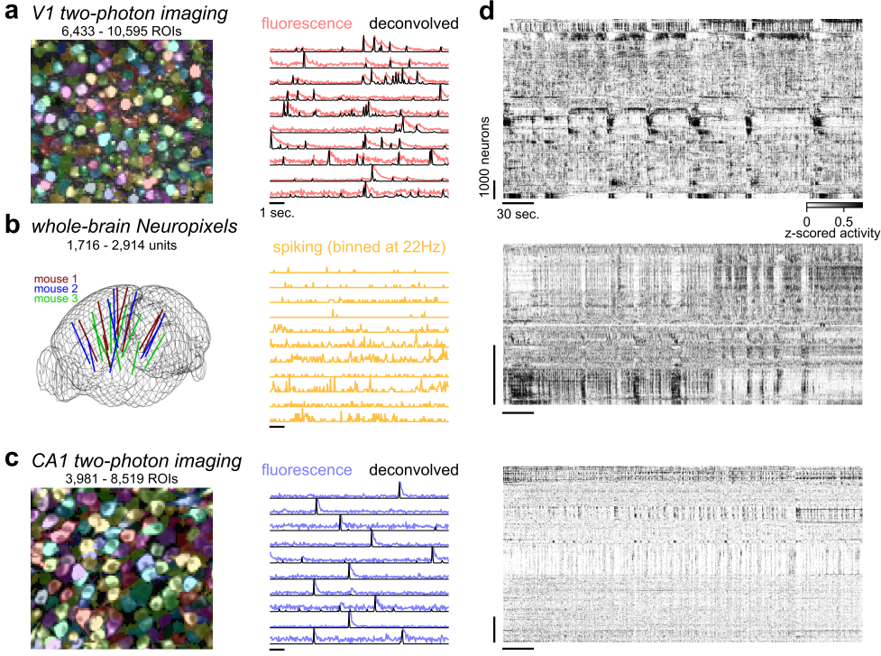
Neural recordings resemble linear dynamical systems governed by a symmetric connectivity matrix.
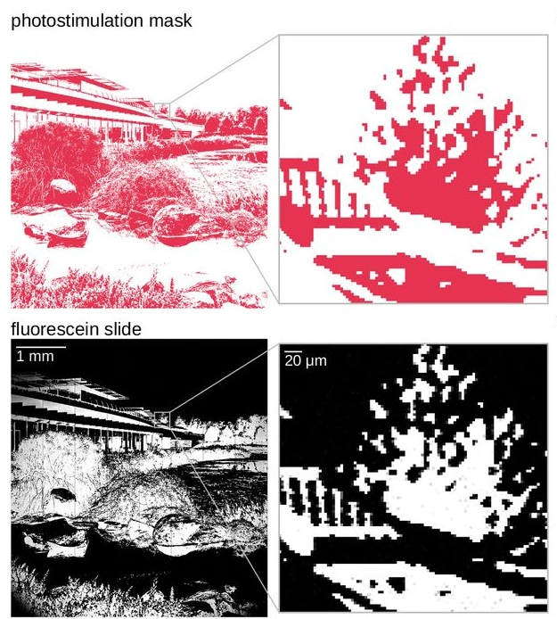
Photoactivating thousands of neurons in 300 ms across a 5 mm field of view, through the same optical path used for recording.
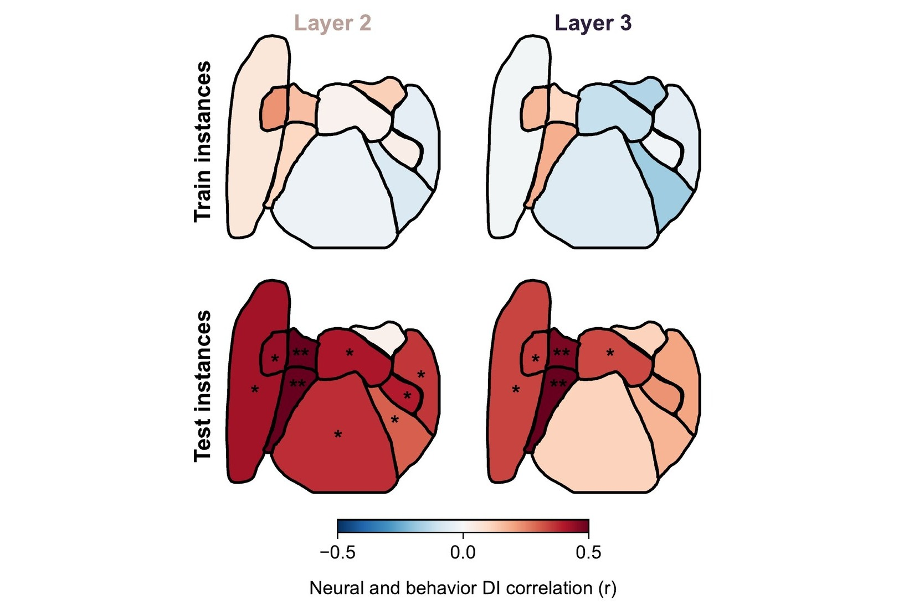
Neural discrimination of novel test images, but not of trained images, predicts how well mice generalize.
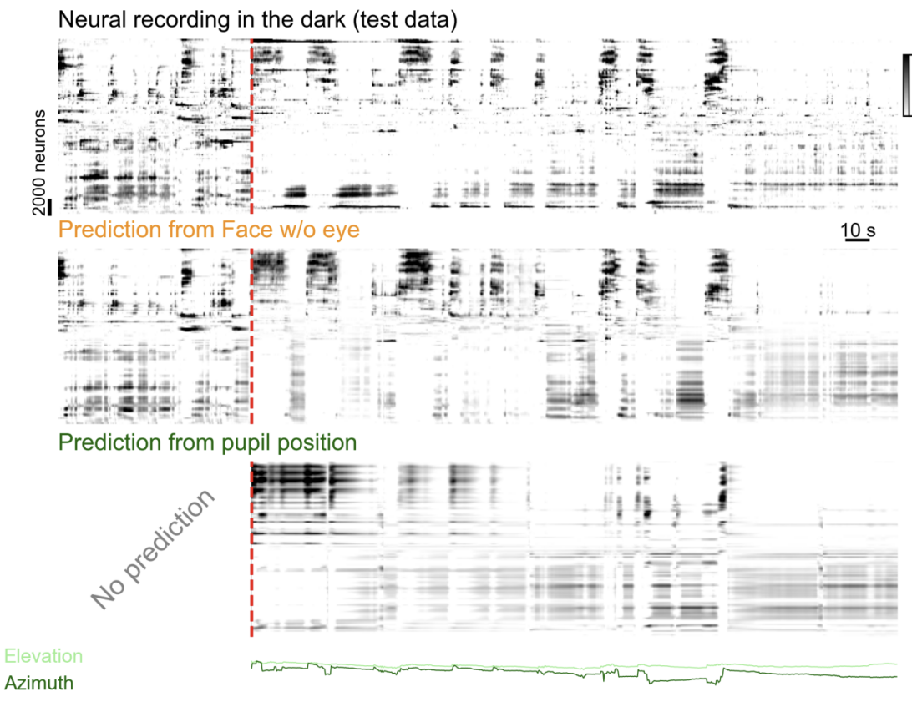
Orofacial movements predict the majority of neural activity in mouse visual cortex related to behavior.
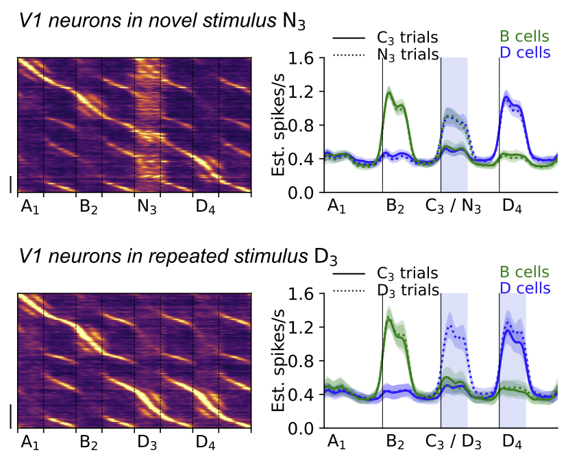
Image novelty, not temporal novelty, drives mismatch responses in visual cortex.
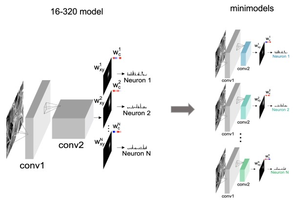
Simplified and interpretable “minimodels” are sufficient to explain complex visual responses in mouse and monkey V1.
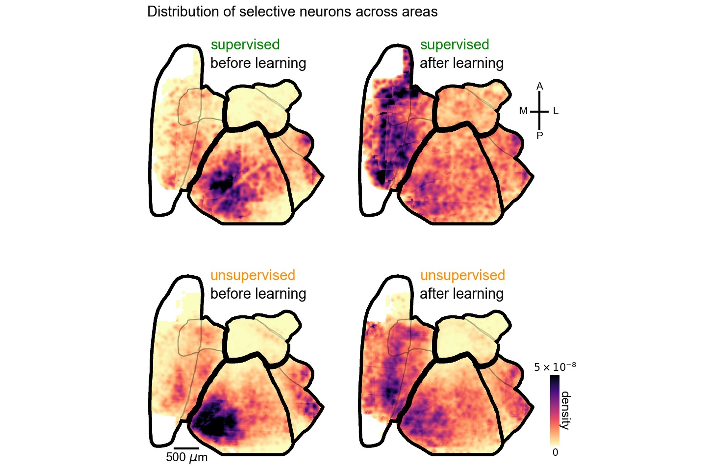
Unsupervised learning - exposure to stimuli without rewards - drives large changes in neural activity in visual cortex, particularly in higher order medial visual areas.
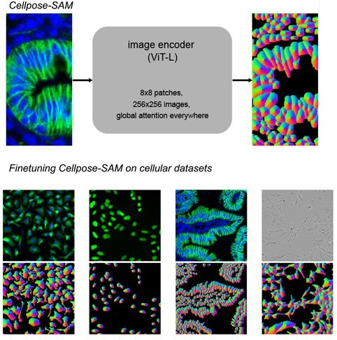
Adapting a foundation model backbone into the Cellpose framework gives segmentation that beats inter-human agreement.
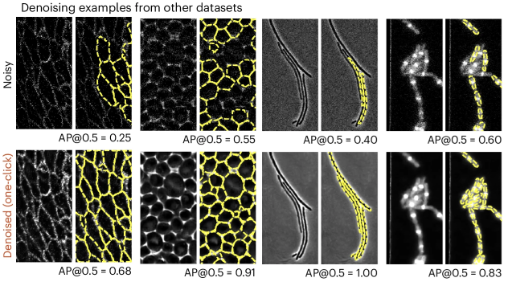
Software for image restoration that works across many cell types and imaging modalities.
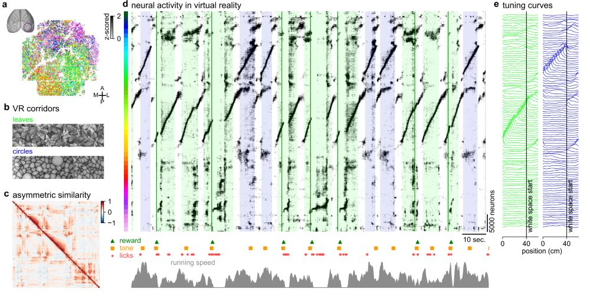
Analysis tool for large-scale neural data which allows users to explore dynamical and spatial relationships among neurons.
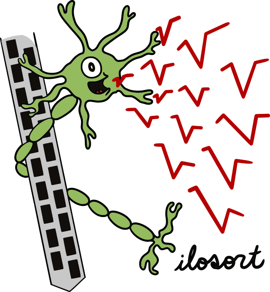
Analysis tool for accurate spike sorting, which is the computational process of extracting the firing times of single neurons from recordings of local electrical fields.
Analysis tool for tracking mouse face keypoints and relating them to large-scale neural activity, using convolutional neural networks.
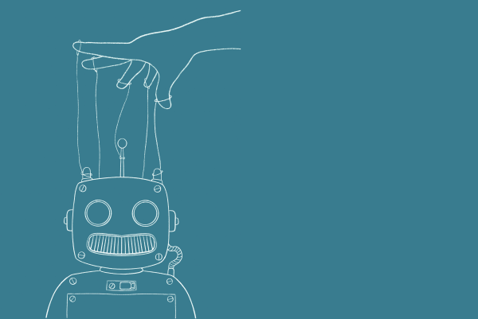
Software for users to quickly and easily create accurate segmentation models for their own data.
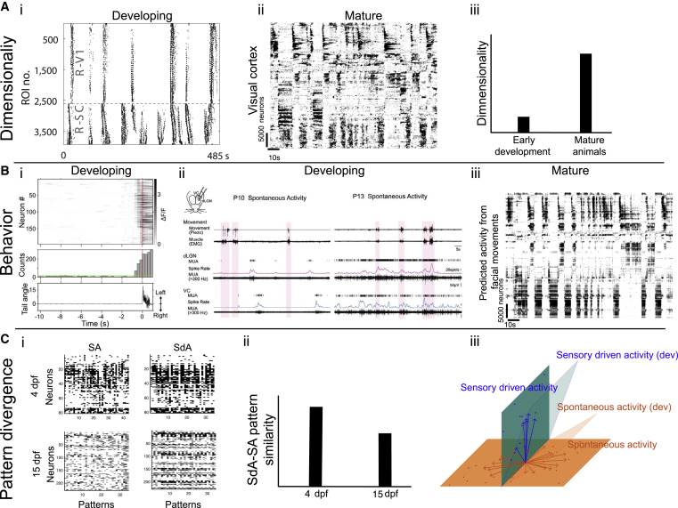
Spontaneous activity across species is related to motor movements. These motor-driven patterns emerge during development, diverging from sensory-driven activity.
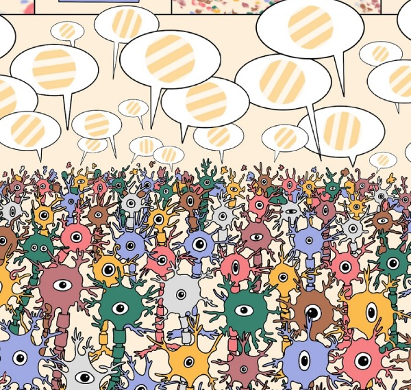
Visual cortex encodes stimuli highly precisely, far surpassing behavioral precision in mice and humans. In a task, visual cortex does not contribute to behavioral…
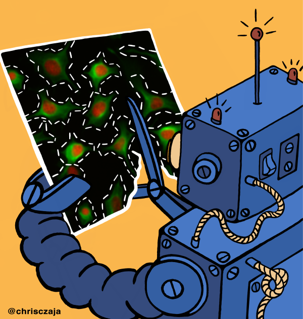
Accurate deep learning-based cellular segmentation tool that works for a wide variety of images, and includes an easy to use GUI.
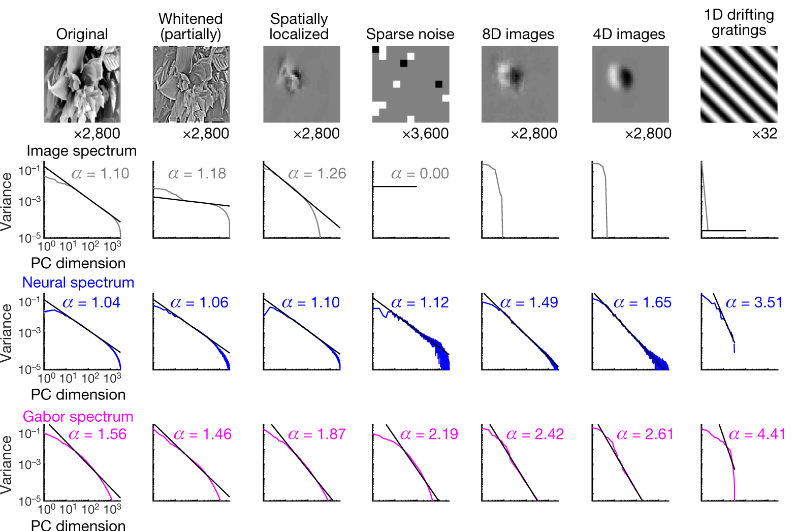
Neural population activity in response to natural images is high-dimensional, and the activity correlations obey a power law of 1/n.
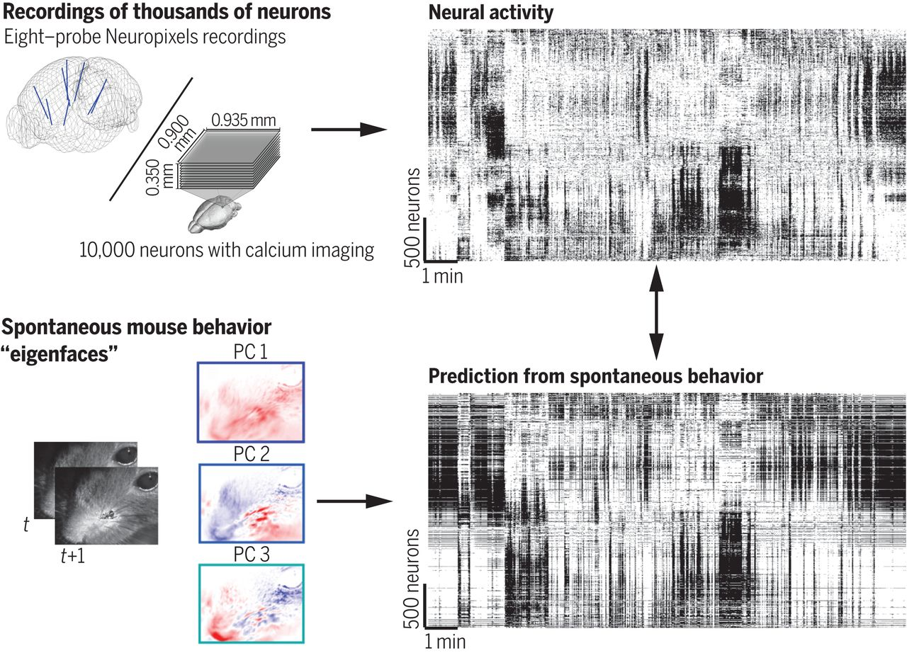
Ongoing neural activity is high-dimensional and driven by the mouse’s behavior. These behavioral representations are orthogonal to stimulus-driven responses.
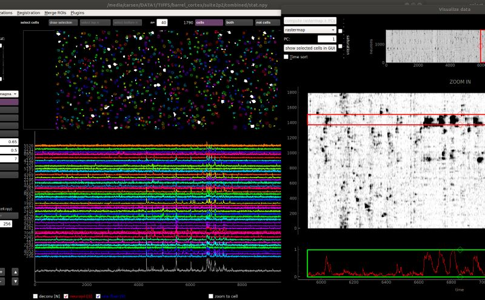
Suite2p enables fast and accurate processing of large-scale neural recordings.
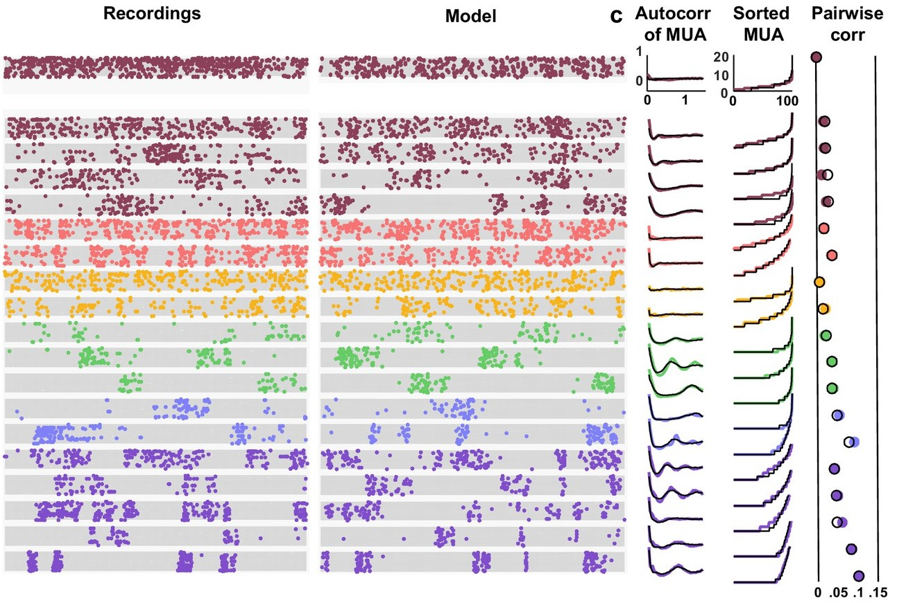
Cortical networks exhibit large-scale fluctuations which creates noise correlations that impact sensory coding. Modeling and data analysis show that inhibition can control…